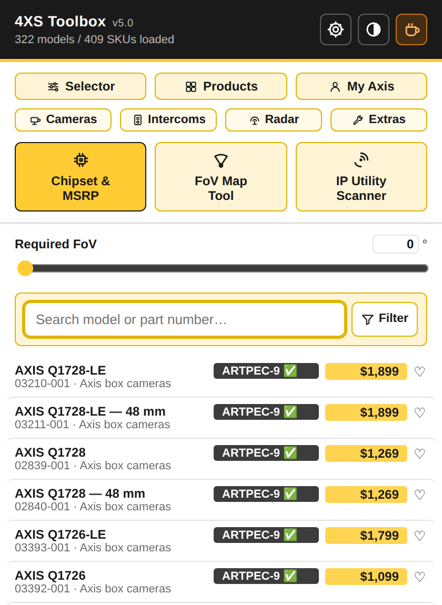
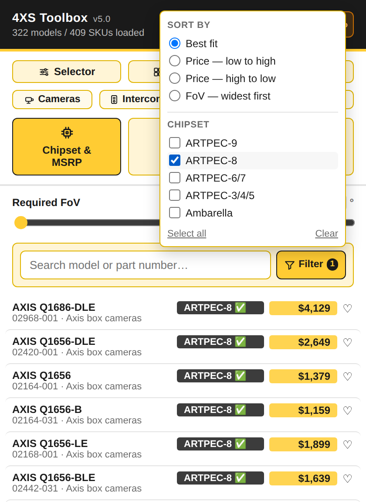
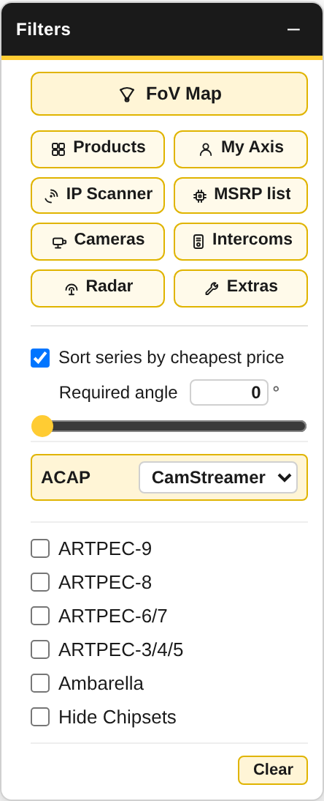
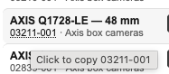
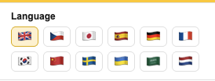
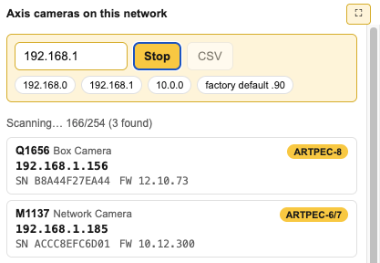

Every number you need
to pick a camera
Chipset decides which analytics run on it. Field of view decides whether it covers the scene. Price decides whether it gets signed off. All three sit on the page you are already reading — no second tab, no spreadsheet.

The whole catalogue in the toolbar
Search 322 models and 409 priced SKUs by name or Axis part number, from any tab. Every row carries its chipset, its list price and a heart that pins it to the top of every list in the extension. Click a model name, part number or category to copy it.

Filter by chipset, sort by price or lens
Narrow to the ARTPEC or Ambarella generation your analytics need, then sort by price or by widest field of view. Favourites stay pinned on top whichever order you choose, and the filter applies to both the catalogue and the map results at once.

Badges on axis.com itself
Every recognised product tile gets a price badge — hover for the Axis part number — plus a chipset label where CamStreamer has data, with a checkmark when CamStreamer ACAPs are supported. On the Product Selector, search results, product and category pages, and inside the Compare Products table.

A filter panel the Product Selector never had
Multi-select chipset filtering, a required-angle slider, an ACAP dropdown that narrows to what CamStreamer supports, and cheapest-first series sorting — all applied live to the page, with your pinned categories and tools one click away at the top.

Click to copy, exactly what you clicked
Part number into the quote, model name into the email, category into the spec — click the field you want and it is on the clipboard, with a checkmark to confirm. Multipack SKUs drop their (10 pcs) suffix so what you paste is the number Axis actually orders against.

Speaks your language
Every string in the popup, the panel and the scanner is translated into twelve languages — English, Czech, Japanese, Spanish, German, French, Korean, Chinese, Swedish, Ukrainian, Arabic and Dutch. It picks one from your browser on first run; the flag row switches it any time.

An IP Utility for Mac and Linux, finally
Axis only ever shipped AXIS IP Utility for Windows. Every Mac and Linux integrator has been stuck borrowing a laptop, running a VM, or guessing addresses.
This is the same job done in the browser, so it runs anywhere Chrome or Firefox does — macOS, Windows, Linux, ChromeOS. Type the subnet, press Scan, and watch devices appear as they answer: model, IP, serial, firmware and chipset, straight from the cameras over VAPIX, with no install and nothing leaving the machine.